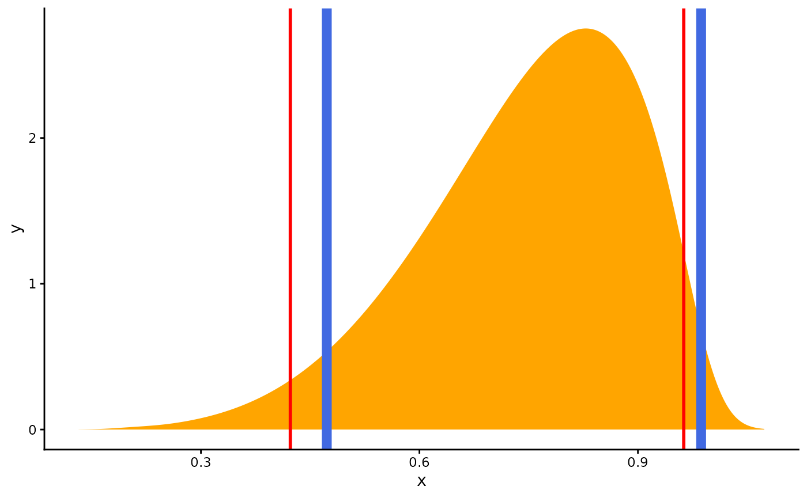

This vignette can be referred to by citing the package:
- Makowski, D., Ben-Shachar, M. S., & Lüdecke, D. (2019). bayestestR: Describing Effects and their Uncertainty, Existence and Significance within the Bayesian Framework. Journal of Open Source Software, 4(40), 1541. https://doi.org/10.21105/joss.01541
What is a Credible Interval?
Credible intervals are an important concept in Bayesian statistics. Its core purpose is to describe and summarise the uncertainty related to the unknown parameters you are trying to estimate. In this regard, it could appear as quite similar to the frequentist Confidence Intervals. However, while their goal is similar, their statistical definition and meaning is very different. Indeed, while the latter is obtained through a complex algorithm full of rarely-tested assumptions and approximations, the credible intervals are fairly straightforward to compute.
As the Bayesian inference returns a distribution of possible effect values (the posterior), the credible interval is just the range containing a particular percentage of probable values. For instance, the 95% credible interval is simply the central portion of the posterior distribution that contains 95% of the values.
Note how this drastically improve the interpretability of the Bayesian interval compared to the frequentist one. Indeed, the Bayesian framework allows us to say “given the observed data, the effect has 95% probability of falling within this range”, compared to the less straightforward, frequentist alternative (the 95% Confidence* Interval) would be “there is a 95% probability that when computing a confidence interval from data of this sort, the effect falls within this range”.
89% vs. 95% CI
Using 89% is another popular choice, and used to be the default for a long time (read here the story of the change). How did it start?
Naturally, when it came about choosing the CI level to report by default, people started using 95%, the arbitrary convention used in the frequentist world. However, some authors suggested that 95% might not be the most appropriate for Bayesian posterior distributions, potentially lacking stability if not enough posterior samples are drawn (Kruschke, 2014).
The proposition was to use 90% instead of 95%. However, recently, McElreath (2014, 2018) suggested that if we were to use arbitrary thresholds in the first place, why not use 89%? Moreover, 89 is the highest prime number that does not exceed the already unstable 95% threshold. What does it have to do with anything? Nothing, but it reminds us of the total arbitrariness of these conventions (McElreath, 2018).
Thus, CIs computed with 89% intervals (ci = 0.89), are
deemed to be more stable than, for instance, 95% intervals (Kruschke, 2014). An effective sample size (ESS;
see here)
of at least 10.000 is recommended if one wants to compute precise 95%
intervals (Kruschke, 2014, p. 183ff). Unfortunately, the default number
of posterior samples for most Bayes packages (e.g.,
rstanarm or brms) is only 4.000 (thus, you
might want to increase it when fitting your model).
However, 95% has some advantages too. For instance, it shares (in the case of a normal posterior distribution) an intuitive relationship with the standard deviation and it conveys a more accurate image of the (artificial) bounds of the distribution. Also, because it is wider, it makes analyses more conservative (i.e., the probability of covering 0 is larger for the 95% CI than for lower ranges such as 89%), which is a good thing in the context of the reproducibility crisis.
To add to the mess, some other software use different default, such as for instance 90%. Ultimately, you as the user should make an informed decision, based on your needs and goals, and justify your choice.
Different types of CIs
The reader might notice that bayestestR provides
two methods to compute credible intervals, the
Highest Density Interval (HDI) (hdi()) and
the Equal-tailed Interval (ETI) (eti()).
These methods can also be changed via the method argument
of the ci() function. What is the difference? Let’s
see:
library(bayestestR)
library(ggplot2)
# Generate a normal distribution
posterior <- distribution_normal(1000)
# Compute HDI and ETI
ci_hdi <- ci(posterior, method = "HDI")
ci_eti <- ci(posterior, method = "ETI")
# Plot the distribution and add the limits of the two CIs
out <- estimate_density(posterior, extend = TRUE)
ggplot(out, aes(x = x, y = y)) +
geom_area(fill = "orange") +
theme_classic() +
# HDI in blue
geom_vline(xintercept = ci_hdi$CI_low, color = "royalblue", linewidth = 3) +
geom_vline(xintercept = ci_hdi$CI_high, color = "royalblue", linewidth = 3) +
# Quantile in red
geom_vline(xintercept = ci_eti$CI_low, color = "red", linewidth = 1) +
geom_vline(xintercept = ci_eti$CI_high, color = "red", linewidth = 1)
These are exactly the same…
But is it also the case for other types of distributions?
# Generate a beta distribution
posterior <- distribution_beta(1000, 6, 2)
# Compute HDI and Quantile CI
ci_hdi <- ci(posterior, method = "HDI")
ci_eti <- ci(posterior, method = "ETI")
# Plot the distribution and add the limits of the two CIs
out <- estimate_density(posterior, extend = TRUE)
ggplot(out, aes(x = x, y = y)) +
geom_area(fill = "orange") +
theme_classic() +
# HDI in blue
geom_vline(xintercept = ci_hdi$CI_low, color = "royalblue", linewidth = 3) +
geom_vline(xintercept = ci_hdi$CI_high, color = "royalblue", linewidth = 3) +
# ETI in red
geom_vline(xintercept = ci_eti$CI_low, color = "red", linewidth = 1) +
geom_vline(xintercept = ci_eti$CI_high, color = "red", linewidth = 1)
The difference is strong with this one.
Contrary to the HDI, for which all points within the interval have a higher probability density than points outside the interval, the ETI is equal-tailed. This means that a 90% interval has 5% of the distribution on either side of its limits. It indicates the 5th percentile and the 95th percentile. In symmetric distributions, the two methods of computing credible intervals, the ETI and the HDI, return similar results.
This is not the case for skewed distributions. Indeed, it is possible that parameter values in the ETI have lower credibility (are less probable) than parameter values outside the ETI. This property seems undesirable as a summary of the credible values in a distribution.
On the other hand, the ETI range does not change when transformations are applied to the distribution (for instance, for log-odds to probabilities transformation): the lower and higher bounds of the transformed distribution will correspond to the transformed lower and higher bounds of the original distribution. On the contrary, applying transformations to the distribution will change the resulting HDI. Thus, for instance, if exponentiated credible intervals are required, calculating the ETI is recommended.
The Support Interval
Unlike the HDI and the ETI, which look at the posterior distribution, the Support Interval (SI) provides information regarding the change in the credibility of values from the prior to the posterior - in other words, it indicates which values of a parameter have gained support by the observed data by some factor greater or equal to k (Wagenmakers, Gronau, Dablander, & Etz, 2018).
prior <- distribution_normal(40000, mean = 0, sd = 1)
posterior <- distribution_normal(40000, mean = 0.5, sd = 0.3)
si_1 <- si(posterior, prior, BF = 1)
si_3 <- si(posterior, prior, BF = 3)
ggplot(mapping = aes(x = x, y = y)) +
theme_classic() +
# The posterior
geom_area(
fill = "orange",
data = estimate_density(posterior, extend = TRUE)
) +
# The prior
geom_area(
color = "black", fill = NA, linewidth = 1, linetype = "dashed",
data = estimate_density(prior, extend = TRUE)
) +
# BF = 1 SI in blue
geom_vline(xintercept = si_1$CI_low, color = "royalblue", linewidth = 1) +
geom_vline(xintercept = si_1$CI_high, color = "royalblue", linewidth = 1) +
# BF = 3 SI in red
geom_vline(xintercept = si_3$CI_low, color = "red", linewidth = 1) +
geom_vline(xintercept = si_3$CI_high, color = "red", linewidth = 1)
Between the blue lines are values that received some support by the data (this is a \(BF = 1~SI\)), while between the red lines are values that received at least moderate support (\(BF = 3~SI\)) by the data.
From the perspective of the Savage-Dickey Bayes factor, testing
against a point null hypothesis for any value within the Support
Interval will yield a Bayes factor smaller than 1/BF.